When I built my custom PC, I didn't go very hard on accessories outside of getting myself a monitor because I already had a bunch of stuff around the house. For the keyboard, I had an old (and yellowed) Logitech Internet Navigator keyboard which worked great because it had stuff like media keys on it so that I could control volume and music playback.
Honestly this keyboard is perfectly cromulent and I don't really have any complaints about it outside of the fact that its keys are yellowed (but that's easy to fix) and that it only has like 3 key rollover. I've never been in a rush to get a new keyboard but it would be nice y'know?
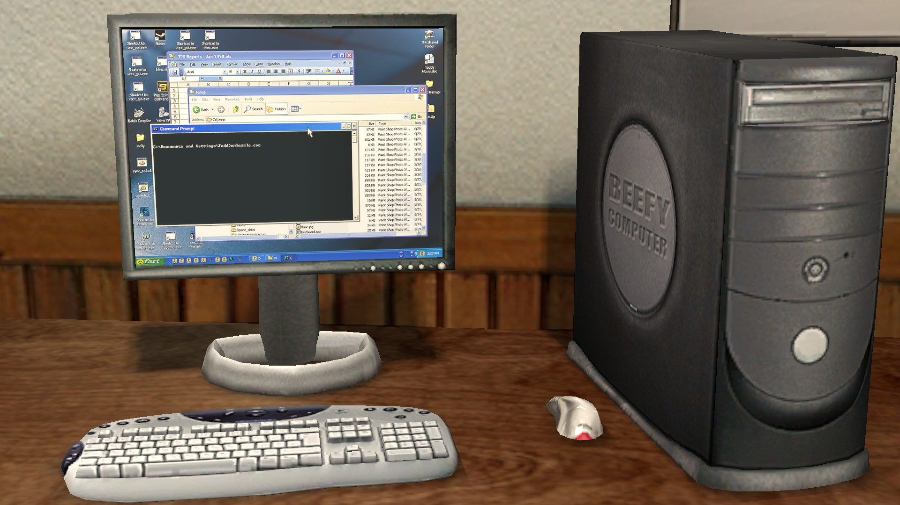
Fun fact, if you ever played cs_office back in the Counter Strike: Source days, you might've seen this keyboard lying around the office.You see, I'm very picky about my keyboards, and here's why:
An extra thing that I would like on my keyboard would be support for the open source QMK firmware, because like that if there's any missing functionality (like media keys) I can always add it in myself. Finding a keyboard that had all of that stuff (and the 3rd bullet point is apparently a really hard ask for a lot of keyboard manufacturers) has been impossible. Per key LEDs are also nice but not a dealbreaker for me.
Recently I came across a barebones keyboard for 30€ and it seemed to tick all the boxes except for QMK support. I thought to myself that even if it doesn't support QMK, I could always add that support in myself with a bit of hacking. Being a really cheap keyboard, I went ahead and bought it. Unfortunately for me, the specific board revision I received is a newer version that replaced the microprocessor with a crappy 8-bit one, so adding QMK support to it was infeasible. However, the case the keyboard came in was mostly metal and pretty nice, especially for the price.
In December I started a new job as an Embedded Systems Engineer, and a bunch of my colleagues had their own custom mechanical keyboards. One of them had even designed his own in KiCad and had it printed. Since the company did a lot of custom hardware work, I thought that it would be a nice learning experience for me to design a keyboard PCB. This would also allow me to be more useful around the company, as I was the only pure computer science person in a team of electrical engineers.
Thus, I decided to go down a rabbit hole to make a custom keyboard which fit inside the nice metal case.
First and foremost, because I am making a clone of an existing board, I need to know the positions of everything as accurately as possible. One side of the keyboard was completely flat excluding some minor bumps from a through-hole connector, so I desoldered it to have a fully flat face. My idea was to use a photocopier to take a scan of the board, so that I could then have an image I could trace over. Unfortunately the scanner I had at home was a bit too small, meaning that the keyboard would have to be slightly angled and require 2 scans. It being angled was a big no-no since it would cause perspective distortions that prevent getting accurate measurements. I went to a few photocopy houses that had bigger flatbeds and had them scan the flat side for me. All of them unfortunately required taking 2 scans as well but at least the flatbed was big enough to fit the whole board.
I picked the best scans, and using Photoshop I straightened the scans (I brought a ruler to keep the board straight on the flatbed but despite my best efforts it would still end up ever so slightly angled) and stitched both halves together. The stitching wasn't perfect, since scanners use a moving camera which introduces minor visual distortions. However the two scans only really diverged by 2-3 pixels which would be equivalent to like 0.1mm, so it wasn't a big deal. The result was:
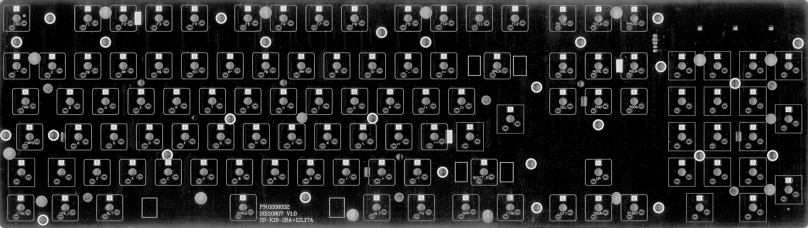
I made sure the scale of the image matched its real life measurements by playing around with the Pixels Per Inch values. The next step was to trace everything that was relevant in an SVG program. Having an SVG has a few advantages, namely that SVGs have "infinite" precision compared to images, which are limited by the number of pixels. That sub-pixel precision allows me to ensure everything is placed as accurately as possible. I use Inkscape for my SVG needs, and after a few hours I made this:
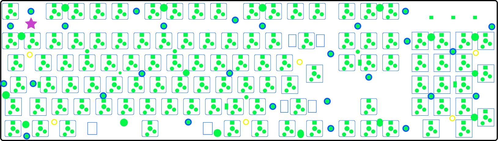
The SVG contains the silkscreen (the white decorative squares where each key is) in blue, the outline of the board, and holes in green. These holes include a spot for the LEDs, hotswap sockets, and mounting holes. There were 6 additional holes (in yellow in the SVG) which were brass mounts that screws were fed through. These mounts don't have any screw threads in them, so I'm not sure why they are different from the other mounting holes, but since I'm going through all this trouble I might as well mark them properly. You might have also noticed the purple star. That star exists so that I can align the layers when I import them one by one into the CAD program.
Now, it would've been really embarrassing if I went through all this work and then it turned out that all the keys were misaligned by an entire millimeter, which wouldn't fit in the case, so I decided to make a cardboard model. I wasn't sure if the printer dialog in InkScape would print the image to scale, and when I tried importing the SVG into LibreOffice Writer (open source Microsoft Word) I couldn't find a way to have it not scale the image. LibreOffice Impress (open source Microsoft Powerpoint) imported it perfectly, so I put the SVG in Impress, made 2 slides (since the board wouldn't fit in a single A4), printed it out, cut it, taped the two halves together, glued it to a piece of cardboard (for thickness and sturdiness), and then cut the mounting holes using an exacto knife and a drill. After all that work, I put it inside the case, and it seemed to be a perfect match.
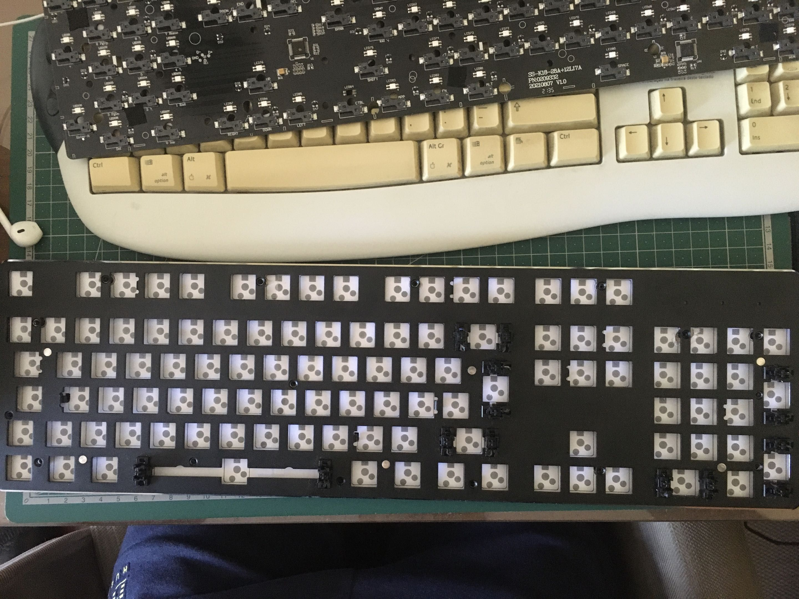
I know it might not look like it from the image, but trust me it's perfect. If you look directly above each key, it's positioned correctly within each hole, which is why the center keys look fine but the other keys look like they're diverged.So, comfortable enough to proceed into making the PCB, it was time to learn KiCad.
Before jumping to the schematic, there is a small tangent that must be taken first. The "easy" way to think of a keyboard is a board with a bunch of switches/buttons on it. You feed voltage into each key, and then when you press the key it closes the circuit and sends the voltage to the microprocessor so it knows that a key was pressed. Each key needs to be hooked up to the microprocessor in some way, and the easy way to think about it would be to have each button take up a "leg" of the microprocessor, like this:
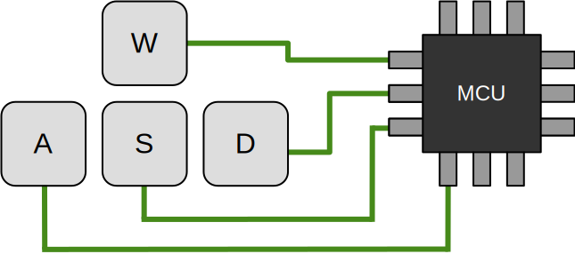
You will probably notice that you will very quickly run out of legs to hook up to the microprocessor, especially me who wants a full sized keyboard with 105 keys. So instead, what is typically done is you wire the keyboard in a matrix:
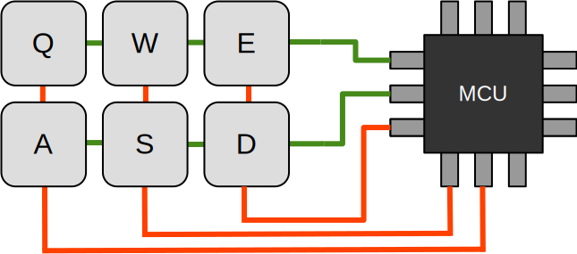
The rows and columns are not connected to one another, they are separate, hence why the rows have a different color than the columns in this diagram.If I wanted to add another row of 3 keys, it would only take 1 extra leg of the processor instead of 3!
A microprocessor has a bunch of legs and some of them will have very specific uses that cannot be changed, like one that takes in power, one that's grounded, one that restarts the MCU if it receives voltage, etc... There will be some pins called "GPIO", which stands for "General Purpose Input Output". Most GPIO don't serve any specific purpose, you can make your program do whatever you want with them. In our case, the GPIO will be for our keyboard rows and columns.
So why am I bringing this up now? You see, in order to choose the right components for your keyboard, you need to know how many rows and columns you're going to need. In the case of my keyboard, I already have a very specific layout I have to use because I'm putting it in an already existing case, but if you are also making a custom case for your keyboard, it might be helpful to take a few minutes to use the Keyboard Layout Editor to decide how your keyboard will look. You can export the layout into a JSON file which can be used to speed up positioning the keys in CAD software, but just as importantly you can export an image of your layout:
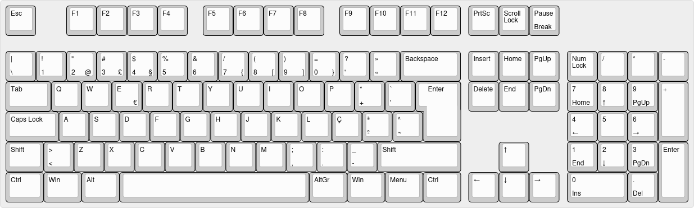
You should now go into a paint program and decide how you will want your keyboard matrix to be wired, so that you know how many rows and columns you have. In my case, I wired mine like this:
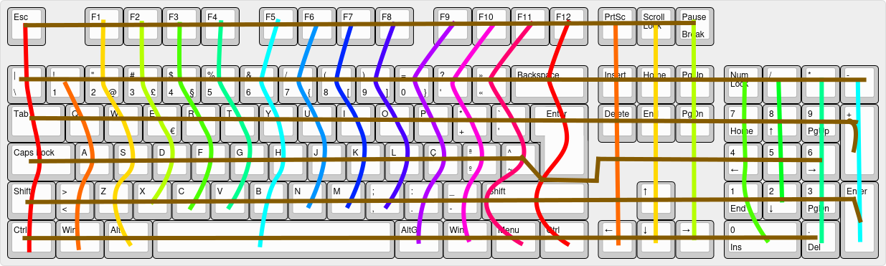
That gives me 21 columns and 6 rows, for a total of 27 GPIO on the MCU.
Before you can make the PCB, you need to first make a schematic which explains how all the components are wired together. The first and most important thing you need to pick is the microprocessor for your keyboard. The one you choose depends on what stuff you want on your keyboard. Small keyboards tend to go with a Teensy 2.0 or ATmega32U4 since there are drop-in QMK firmwares available for them. If your keyboard is to be wireless, a popular option is the nRF52840. However, since I need to occupy 27 pins on the MCU just for the keyboard itself, I'll need an MCU with lots of GPIO, so I have chosen another popular MCU called STM32, specifically the STM32F072C8T. You should download the spec sheet of your specific MCU and check how many GPIO pins it provides. The STM32 has up to 37 GPIO pins, which is plenty since I'll need 27 pins for the keyboard matrix, 2 pins for the USB Data, and 1 pin for the LED logic. The STM32F072C8T has 64KiB of flash memory which is enough for the STM32 port of the QMK firmware, but you could go with a STM32F072CBT6 for 128KiB if you intend on having a lot of crazy firmware features.
To make the schematic and the subsequent PCB, I will be using KiCAD since it is free, open source, and widely used in the industry (including at my workplace).
Before starting my project, there is one external library which will come in handy, and that is marbastlib. This library provides footprints and 3D models for popular mechanical keyboard parts, such as MX style hotswap switches. There are some other useful plugins like "Keyboard Footprints Placer" which will automatically position keys on your PCB from the JSON file you exported from Keyboard Layout Editor. I won't be using it because I'll need to place keys according to my SVG file.
This blog post won't serve as a full KiCAD tutorial, I will talk about the keyboard creation process but I expect you to also look at videos and tutorials on how to use the program, as well as other mechanical keyboard designing posts/videos.
Upon creating your schematic, search for your specific microprocessor and place it on the sheet:
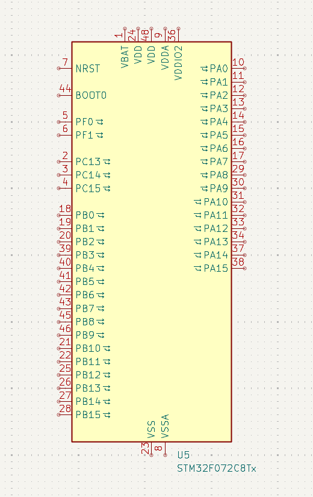
There sure are a lot of legs on this creature.At this point, it is a good idea for you to read the specification sheet of your device in full. You don't need to understand everything that's there, but you do need to read it or you will risk wiring something incorrectly. Reading through it, you will learn that:
Wiring that is easy:
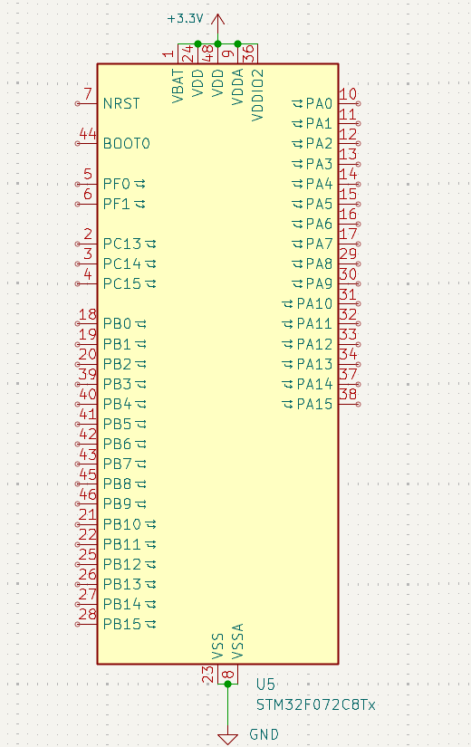
Confusingly, despite the 3.3V arrow pointing away from the circuit, the voltage direction is actually going towards the MCU. This is the drawing convention for schematics, don't ask me why.I did skip over one important thing which is capacitors. A capacitor is like a "mini rechargeable battery", and one of their main purposes on a PCB is to serve as a voltage stabilizer (these are known as decoupling capacitors). For example, if a specific line of the circuit is being fed 3.3V but for some reason that drops to 2.7, a capacitor will provide some of its stored power to push the signal back to 3.3. Subsequently, if the line erratically gets too much voltage, like 3.7, the capacitor will absorb that voltage to put it back at 3.3. This is only for short bursts of time, like to clean up the fact that signals take few microseconds to stabilize when switching between 0 and 1. It's pretty normal to have at least one capacitor for every power source of an integrated circuit (IC). The STM32 recommends having:
That would look like this:
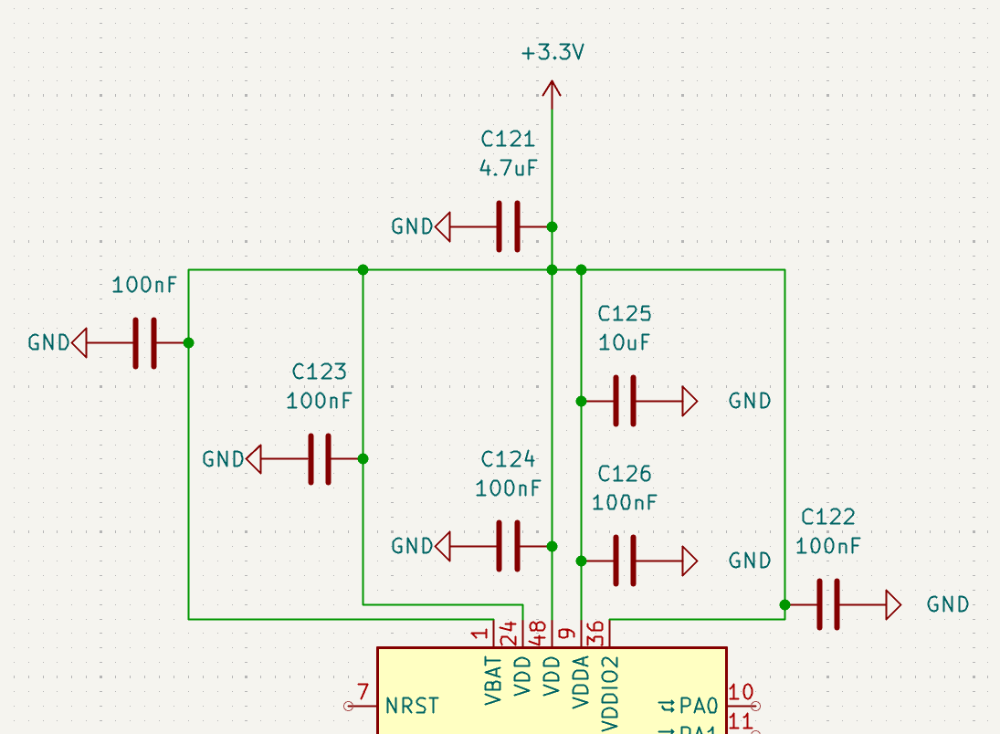
This is a bit annoying to read, so it's common for people to have the caps in a separate but equally wired configuration. I did so and left a note:
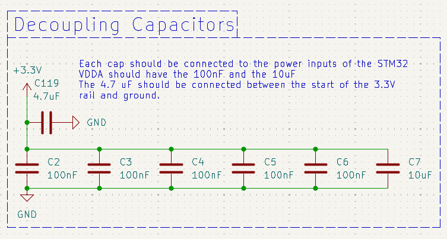
Next, we need to hook up the reset system. In order to program the STM32 with our custom firmware, it needs to be put in a safe state to receive the firmware, which requires us to wire the NRST and BOOT0 pins. The data sheet recommends putting a 100nF capacitor on NRST to prevent random parasitic voltage that gets on the line from accidentally triggering the reset:
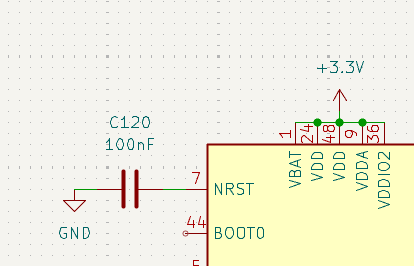
And then, in order to put the STM32 into "Bootloader Mode" (the safe state where it can be programmed with our custom firmware), we need to feed the BOOT0 pin 3.3V. If we give it 3.3V all the time then it's never going to leave bootloader mode, so I'm going to hook it up to a button so that we can choose to enter bootloader mode by holding the button down when plugging the board into power. This requires a 10K Ohm pulldown resistor to ensure the pin remains low when the button is not pressed, because without it the pin is "floating" and can pick up random signals from the environment. If you are using USB-C then you are going to already be using 5.1k resistors (as they're part of the spec), so it might be cheaper to use two 5.1Ks (which is a value close enough to 10K) as keeping all the resistor values the same will reduce costs due to having less varied parts. It's gonna be a very minor cost, however.
I added a label to the BOOT0 lead called BOOT, and I wired the boot circuit up separately:
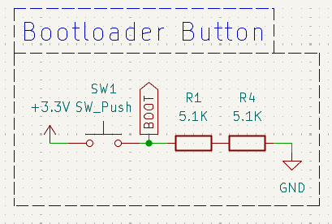
Lastly, we need to wire up the USB D+ and D- lines. USB has 4 main pins, which is power, ground, D+, and D-. The two D pins are data, and they contain the exact same information, however they are what is called a "differential pair", meaning D- will always contain the opposite value of D+. This is done to provide robustness and error checking for digital data signals.
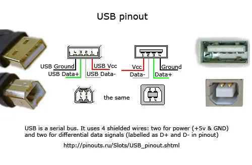
On the STM32, the PA11 and PA12 pins are specifically for USB D- and D+ respectively. USB data pins won't function anywhere else, the pins cannot be wired the other way around because they will not work and I did not have to find this out the hard way! :)
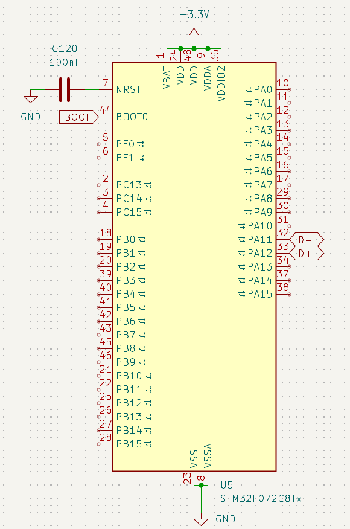
Since the D+ and D- are both inputs and outputs, the flag I gave them points in both directions. The flag directions are purely cosmetic and don't affect functionality whatsoever.To hook up USB to the STM32, we need to have a connector. I would've loved to put USB-C on my keyboard, but after a lot of measuring and trying, there is unfortunately no space inside the case for it. So I'm gonna have to use the same 90º 5 pin connector that the original board uses (the 5th pin is "Shield Ground"). It's usually a good idea to have a 500mA fuse on the USB connector's power line in case we plug the keyboard into a faulty USB that pushes too much current down the 5V line. The fuse will pop but it will save everything else on our board. USB 2.0 is usually limited by 500mA, USB 3.0 can do 900mA, and USB-C varies because the USB-C spec is a headache.
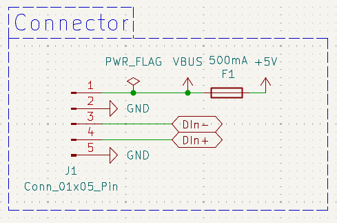
VBUS and 5V are basically the same thing, except we usually designate VBUS as "raw (potentially) unsafe voltage straight from the connector", it becomes a "safe and protected" 5V after going through the fuse.If you are using a sane type of USB connection, like USB-C, you'll need to hook up some extra components for proper functionality. Refer to your spec sheet.
The fuse will "protect" the voltage line but we also need to protect the data pins from electrostatic discharge corrupting our data and potentially frying something. A common IC that does the job is the USB6B1:
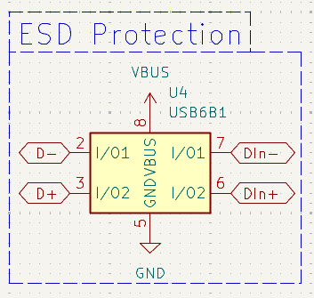
We can feed VBUS into the ESD protection because if you look at the spec sheet's wiring diagram, you'll see that it goes straight through the IC and does not touch anything.Lastly, USB provides 5 volts that we can use to power everything, however our STM32 needs 3.3V. To make sure we don't kill the processor, we need to have a step down converter that takes in the 5V from USB and provides 3.3V. We can use the XC6206 to do just that (it's technically a linear regulator but it'll serve this task as well), along with some capacitors as per the spec sheet:
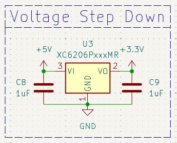
Okay, that's everything we're going to need for the time being. Let's wire the keyboard matrix together!
To keep the schematic clean, I'm going to do the matrix in a separate hierarchical sheet.
Wiring a keyboard matrix is relatively simple, you connect one end of each switch to a row, and the other end of the switch to a column, something like this:
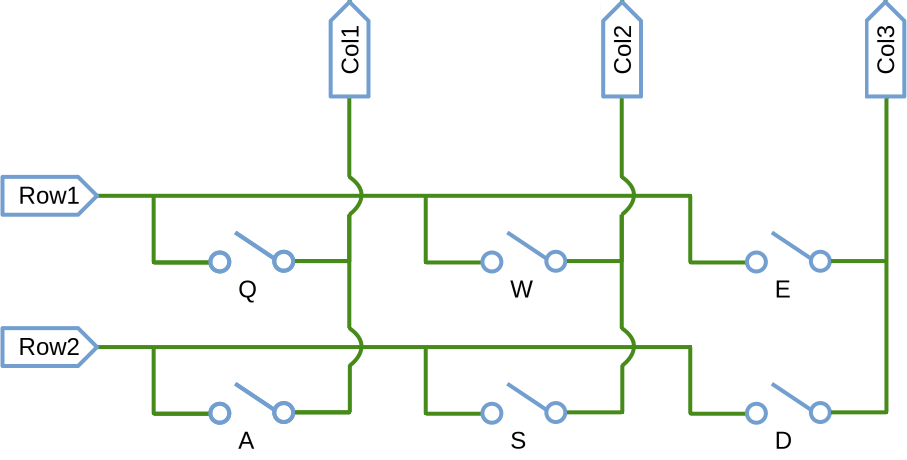
The way a microprocessor detects that a key was pressed is by sending voltage down each row, one at a time, and then checking which columns are receiving voltage. For instance, if the MCU sends voltage down Row 1 and it receives voltage in Column 2, it knows that the W key was pressed:
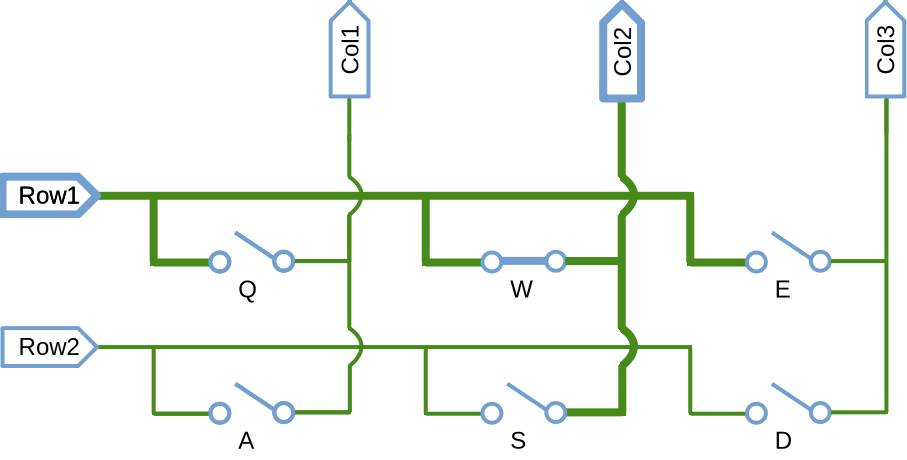
Obviously it will also poll Row2 and it will not receive voltage on any column, so it knows that A, S, and D are not pressed down.
But what if I press another key at the same time, like A? The MCU will scan row 1 first, and then row 2, and it will correctly detect both presses.
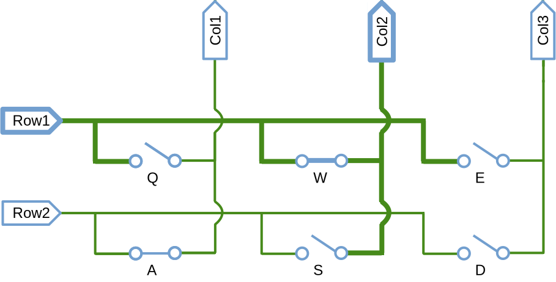
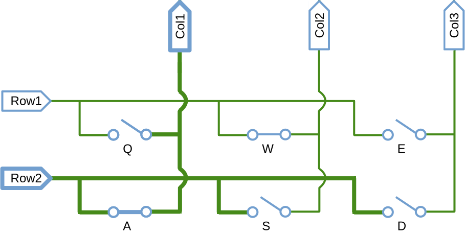
Great, now what if we press a third key, like S?
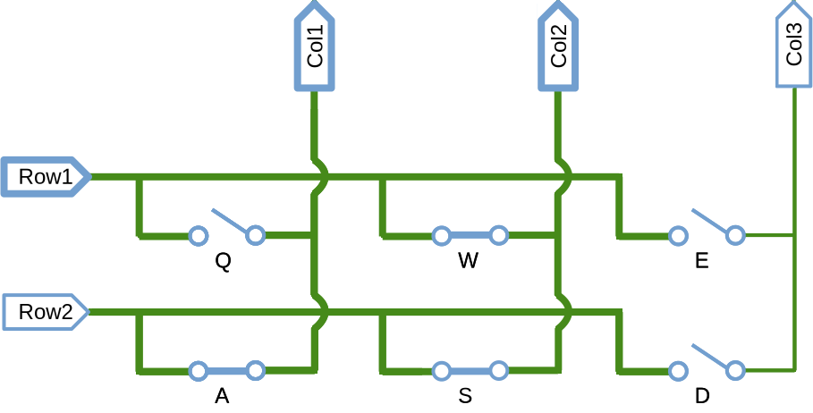
Now we have a problem, because when the first row gets scanned the current goes through the W key, then down to the S key, then to the left where the A key is, which sends the current up column 1 despite the fact that the Q key is not pressed. The MCU has no way of knowing that the Q key isn't pressed, it just reads whatever voltages it receives, so it will type both the letter W and Q. This problem is known as "Key Ghosting".
So how do we fix this? We place a component called a diode on each key, which only allows electricity to flow in one direction. Let's look at what happens now:
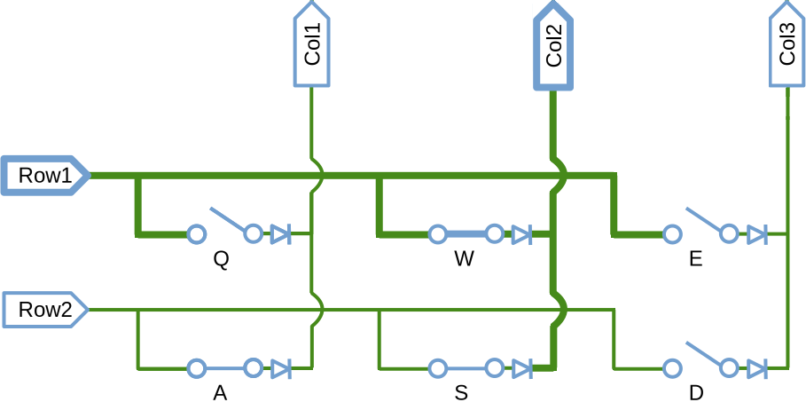
The diode on the S key prevents the current from flowing into it, which is perfect. Putting a diode on each key raises the cost of the keyboard ever so slightly (by a few cents), but it will allow us to have N-key rollover.
In order to place the switches, you need to have marbastlib installed, because keyboard switches are not a standardized SMD parts. Marbastlib will provide schematics for the keyboard switches of your choice, which in my case was hotswappable MX switches.
After a bit of CTRL+C and CTRL+V, you can have a nice schematic like this:
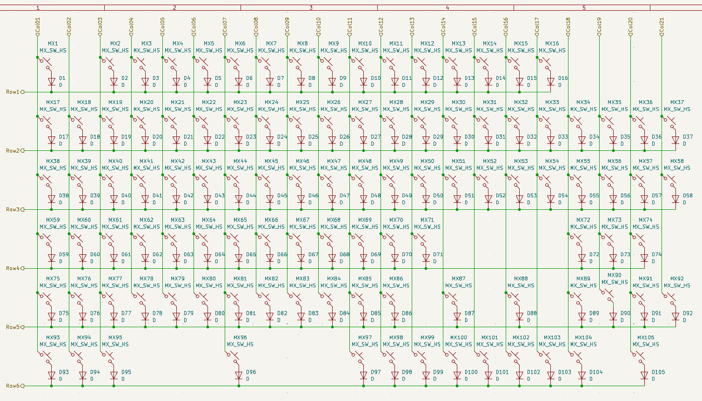
The labels for the rows and columns look different because they're "hierarchical labels" instead of global labels. This is so I can connect these labels to the main sheet.If you look closely at the schematic, you might have noticed that if we try to send voltage to the rows like in my matrix explanation, it won't work because the diodes are pointing the other way. Whenever I looked at other keyboard designs, they always seemed to wire it like this. I assumed this was because QMK was designed to actually poll columns and not rows, so I left the wiring like this. I found out after wiring the PCB that this was relatively easy to swap in the firmware, so I could've very much have wired it like in my explanation. In the end it won't really matter, since you need to manually check all combinations of rows and columns regardless of whether you choose to send voltage down the Column pins or the Row pins, it's just a matter of preference.
You need to be careful when you're wiring because you don't want the rows and columns to be wired together. If you see a fat dot on the crossing between a row and column, delete it because it's not supposed to be there:
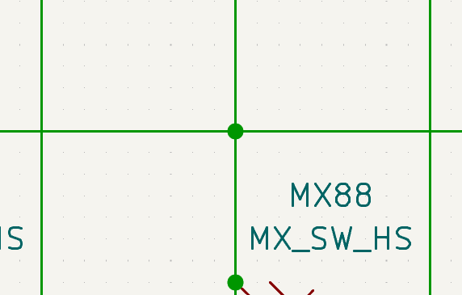
Now, we need to choose how we're going to hook the rows and columns to the GPIO. We're free to pick whatever order we want, so for the time being just hook them up in numerical order. We can change this later during the PCB stage to however is more convenient for the wiring.
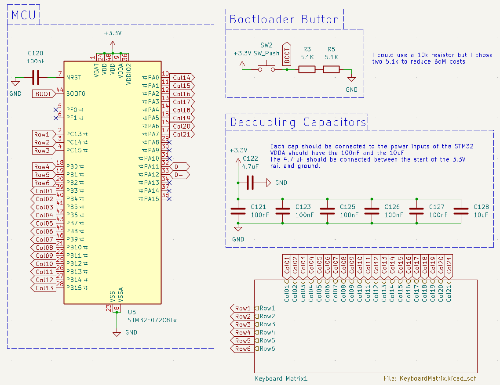
Notice how I skipped the PF0 and PF1 leads. Many microprocessors require an external crystal oscillator to provide the timing for the logic, but the STM32 has a clock built into it. You can, however, supply it with an external clock by hooking it up to PF0 and PF1, however if you don't need the clock you can treat PF0 and PF1 as GPIO just like the rest. I've kept them as unconnected for the time being but considering that I will probably not be needing an external clock they are bound to be changed to a row or column when I get around to wiring the PCB.
The most popular type of LEDs for keyboards are "Neopixels", which are LEDs that are designed to be chained together to run effects and patterns. Of the "Neopixel" type, the two most used for keyboards seem to be SK6812 MINI-E and WS2812B. Typically, for LEDs, you have a blue, red, and green channel, as well as a ground, but Neopixels instead have voltage in, ground, and then a data-in and data-out pin. You send some bytes to the data-in with the RGB values for the LED to use, and then afterwards it will send the next chunk of LED data through its data-out pin into to the next LEDs's data-in. In other words, each LED will take a bit of the data and pass the rest to the next one in the chain.
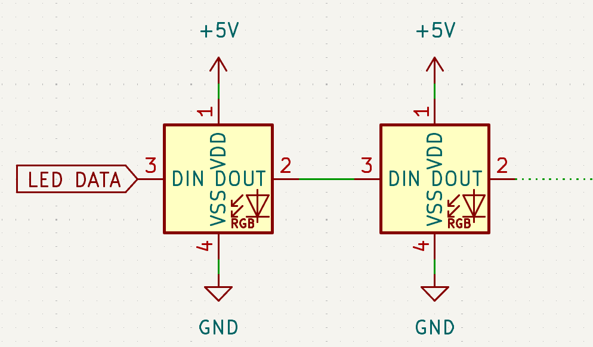
These LEDs are also not a standardized SMD component, so you need marsbastlib for them as well.The keyboard I'm cloning is using SK6812 MINI-E's, so that is what I will use as well. And since I have 105 keys, I will require 105 LEDs, as well as 3 extra LEDs for the CAPS LOCK, Num Lock, and Scroll Lock keys. Wiring these is super simple, just connect all of them in parallel to the 5V line and the ground line, and then hook the data-out of one LED into the data-in of the next.
QMK will handle the LED logic for you because all you need to do is provide it with an XY coordinate for the LED, as well as its index in the chain. This means that you can wire them together however is most convenient to you. That can be like this:
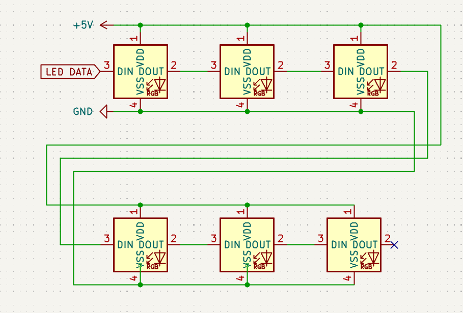
But this has the issue that the data wires are gonna be very long, so they risk losing signal integrity due to impedance in the long copper traces and interference from other signals. A better way to wire them would be to flip each second row of the LED chain, giving you this shorter path:
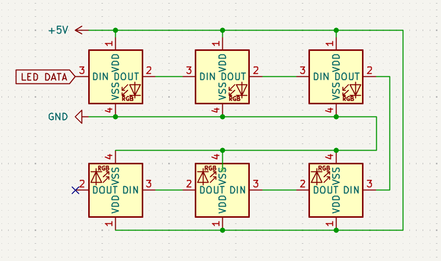
There is one last thing missing, which is that the spec sheet for the SK6812 MINI-E recommends each LED have a 100nF capacitor hooked up to their power. It seems that most people do not bother to do this, and they claim the LEDs don't need them. But I don't mind spending a few extra cents on diodes if it means my keyboard is more robustly designed and up to spec.
I put the LED chain in a separate schematic to reduce clutter, like I did with the matrix, and then I link to it in the main page.
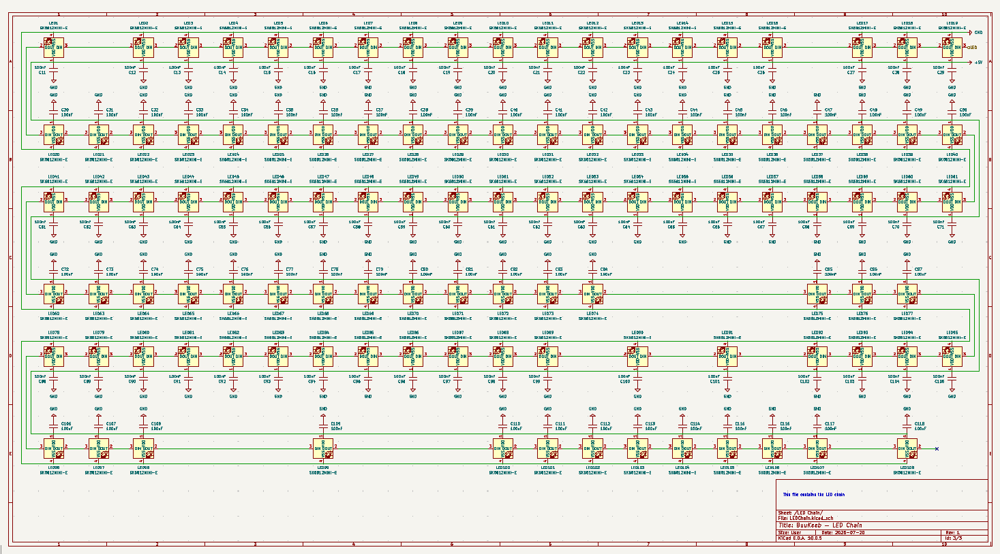
Notice how the chain starts on the right side, this is on purpose and will make more sense later, but you don't have to start there if you don't want to! Since I'm starting on the left, I have to flip each odd row as opposed to each even row.Do keep in mind that each LED can pull up to 13mA if it is running at full brightness. 108 LEDs means 1.3A which will pop our 500mA fuse. Luckily, we don't need to run the LEDs at max brightness, we can limit how bright they are in software.
Now, we can't just directly connect the LED data pin to the STM32, for one specific reason: The GPIO pins output 3.3V, and this might work fine, but it might not considering it's a really long chain of LEDs. Since the logic operates anywhere between 3.2 and 6V, I am going to add a "logic level shifter" to boost the LED data data voltage from 3.3 to 5V. One good device for this is the 74AHCT1G125, which has 5 leads:
The spec sheet says "If the transceiver has an output enable pin, it will disable the outputs section", so we definitely don't want to activate the first pin. We can just hook it to ground, and wire everything else logically (and with a safety 100nF capacitor):
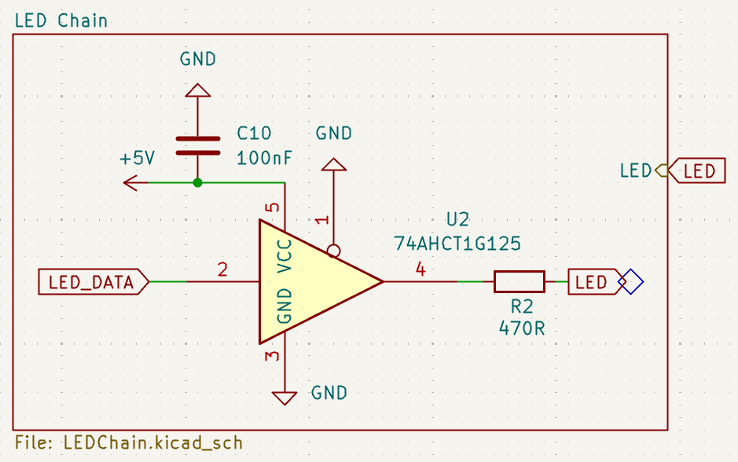
I added a little diamond to the LED flag so that we know that it's an input being "passed into" this schematic. This isn't really standard, I just did it because it helps me keep track of the labelsA 470 Ohm resistor is recommended to be placed before the start of the first SK6812 MINI-E's data-in pin (according to the spec sheet), so I added it after the transciever.
Now we just assign the LED_DATA flag into any free GPIO in the STM32, and we are pretty close to being able to put all of this on a printed circuit board.
So now that we have the schematic outlining what parts we need and how they're connected together, we need to know what the components look like. KiCAD has a button called "Assign Footprints" that lets you select what space your component occupies on the board.
But how do you know what sizes to pick? Well, it depends. For instance, you can get resistors the size of a propane tank, or as small as a grain of sea salt. Different sizes usually mean different operating wattages and temperatures, and since a keyboard is not some hyper complex and power hungry beast, we can get away with small components. For keyboards, it's pretty common to use Surface Mount Devices (SMD) as opposed to larger through-hole components which are much easier to solder. SMD components come in a range of sizes, and typically those are 0402 and 0603, which stand for 0.4x0.2 inches and 0.6x0.3 inches respectively. Annoyingly for the sane parts of the world, when we refer to these sizes it's typically in inches, because if you refer to 0402 in metric you will get a component small enough to lodge itself in between the bumps on your fingerprints, and you will never see it again. Not ideal if you're planning on hand soldering.
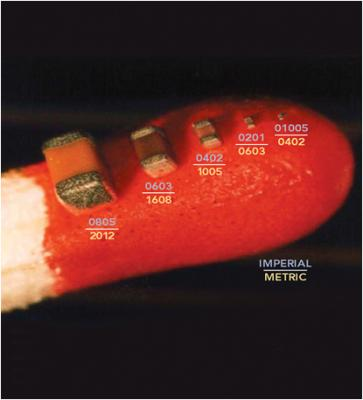
Image sourced from hereFor parts in the nano range (like the 100nF capacitors), 0402 are usually good enough, while parts that push into the micro range (like the 10uF resistors) are safer at 0603. The resistors we'd use for a keyboard are probably fine at 0402. I would suggest using a 1206 for the fuse, since it's supposed to be something that pops in case of an emergency and you want to have an easier time soldering and desoldering them. Diodes use a different designator: "Small Outline Diode", and the numbers on these are not dimensions but rather just package codes. Because electrical engineers have a sense of humor, the numbers work backwards in this case, meaning SOD-123 is significantly larger than an SOD-923. SOD-123's are already plenty small and will serve fine for a keyboard.
When in doubt, consult spec sheets for some components and see what temperatures and wattages they're safe to operate at.
Lastly, we have ICs, which have a bunch of different designations. Too many abbreviations to list, just commit this diagram to memory:
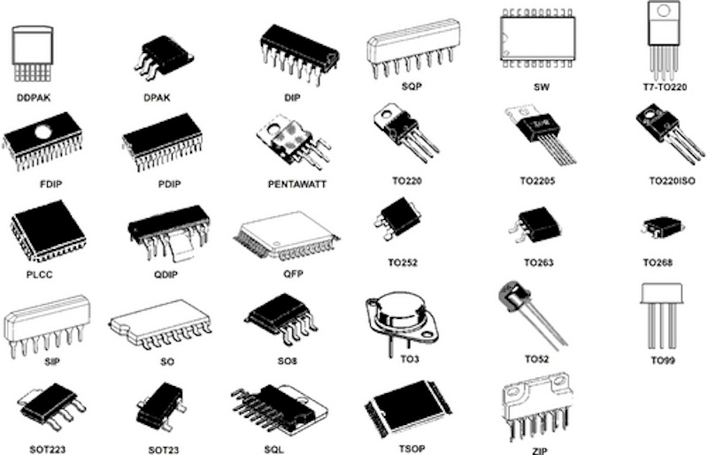
Image sourced from hereYou should check the spec sheet for the components you selected to see what footprints you should pick for them, it will usually tell you along with the exact size in mm. In my case, the STM32 is LQFP (low profile version of a QFP chip) with 48 leads, the transciver is a TSOP-5, the Voltage Regulator is SOT-23 with 3 leads (TSOP-5 and SOT-23 are different names for the same package size), and the ESD protector is SOIC-8. The USB connector will depend on what you selected, I just have a simple horizontal 2mm 5 pin header. The bootloader button can be whichever SMD button that fits your requirements and that you find most adorable. Most buttons come with 4 legs, which are usually the same 2 legs mirrored on the other side for convenience.
The last footprints we need are the LEDs and the MX hotswap sockets. Like I said previously, these are available via marbastlib since they're not standardized parts. Just be careful selecting them because there's a bunch of variants, you'll want to select the one that matches the spec sheet you're using. If you right click a footprint it lets you view it so you can confirm the size and pins match.
Once all parts have footprints, we just need to confirm we have no problems with our schematic.
KiCAD conveniently provides the Electrical Rules Checker, which will check for problems in your design. This will not validate that you are following the specs of your ICs (KiCAD doesn't know anything about them or how they work), just if there are issues in your wiring. Ideally, you'd want zero warnings, and you'll need zero errors. Most of the errors are self explanatory, or explanatory enough with a quick Google search, but there is one error that is really weird: "Input Power pin not driven by any Output Power pins".
Basically, KiCAD sometimes struggles to understand where exactly power comes from. You know that the USB connector provides the power and ground, but KiCAD doesn't know that. So the solution is to place a component called the PWR_FLAG near a power source to tell KiCAD to trust you. You only need to do this once for each net, so if you put the flag next to the VBUS, 5V, and GND lines of your USB connector, that should be enough to silence the error.
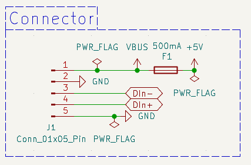
Making the PCB is the most fun part, and it will probably be where you will spend a lot of time if you're like me and you can't help yourself but to George Lucas a project.
So, what exactly is a PCB? It's essentially a really convenient and compact package for a circuit. PCBs are usually a sandwich of multiple layers of fiberglass and copper, each copper layer is electrically isolated from one another by the fiberglass. Simple PCBs are typically 1 or 2 layers of copper, but slightly more complex designs push four layers, while motherboards can go as high as 16 or 32.
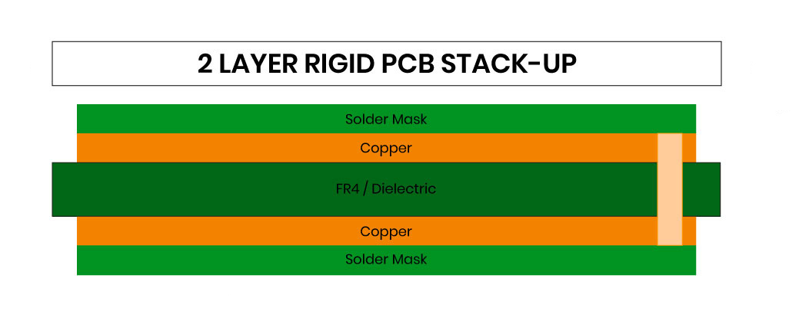
An example of a PCB sandwich. Notice that something is connecting the two copper layers on the right, we'll get to that. Image sourced from hereThe important thing to understand about PCBs is that a fabrication plant will lay an entire layer of copper first and then etch away what isn't needed. You don't need to worry about spending money on copper, you're already paying for the whole layer.
For a keyboard, 2 copper layers is what is recommended. One is too constrained, and more than two is generally unnecessary. KiCAD creates PCBs with two copper layers by default (convenient!), usually referred to at the "front" and "back" layer. But copper isn't the only layer you have to worry about, because there's a lot of them that KiCAD provides. The most useful ones for us are:
When you open the PCB editor in KiCAD, the first thing you have to do is to import the parts from the schematic. There is a button for it on the top called "Update From Schematic", which when you run it, will spawn all the parts for your keyboard at your mouse.
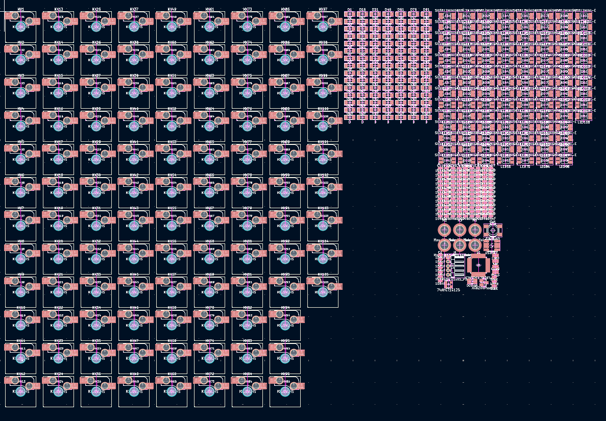
Once you place the parts down, KiCAD will draw some wires showing how all the parts should be connected. Every time you change something in the schematic, you have to click the "Update From Schematic" button, and it will automatically spawn any new parts you created and update the legs or footprints of any parts you modified. It won't remove parts that already exist on your PCB, technology simply has not evolved that far.
If you are making your keyboard layout from scratch, you can use the Keyboard Footprints Placer plugin to import the JSON file and automatically position all the keyswitches for you. In my case, I instead had to import those SVGs I made so that I can place the switches in the exact place they were on the board I'm cloning. I put the key outlines in the Front Silkscreen layer, the LED and mounting holes in the Edge Cut layer, the PCB outline in the Edge Cut Layer, and the keyswitch holes in the UserDrawings layer. Each of these SVGs had that purple star in it to help me position all the imported drawings in the exact same place.
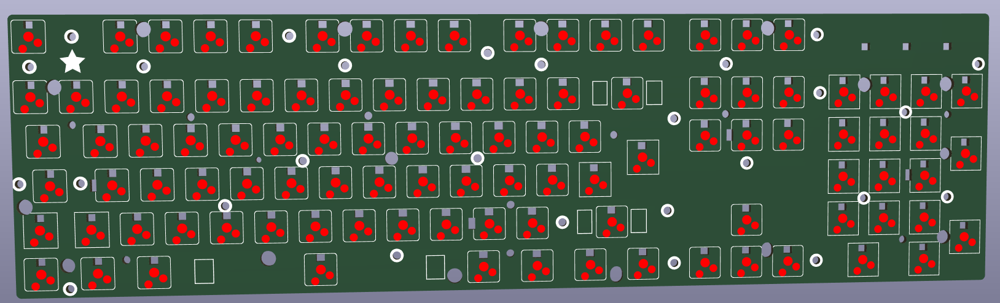
KiCAD lets you view a 3D render of your board. It's a good idea to look at it a lot because you might spot mistakes!The default footprints of components in KiCAD come with some drawings on the silkscreen layer. These will usually include an outline or marking that points to the ground pin of a component, and the component's name from the schematic. You can delete these if you want a super clean PCB (don't do it right now though or you will regret it), but if you're planning on hand soldering I would really recommend keeping them.
Then I moved every single keyswitch to its exact position according to the drawing. To do that, I zoomed in as far as I could and tried to manually place them as centered as possible. Even if they're not exact, we're talking sub milimeters here, which is way smaller than the fabrication houses probably have tolerance for.
Once the keyboard layout is to your liking, you need to draw an outline of your PCB in the edge cut layer to define the shape of your PCB. Since I had my outline SVG, I just imported it. Those who don't have a prepared SVG (which is probably all of you not cloning an existing keyboard like me) can just draw your own outline freestyle using the program's tools.
Now, all those hundred diodes, capacitors, LEDs, and everything else have to be placed on your board too. Remember that each one has a specific name, so don't place the diode that is supposed to be wired to the Q key where the M key is. Good thing they have their names on the silkscreen so you can identify them, and you were smart enough to not delete the silkscreen :)
You don't have to fully commit to where you place the components, because you will likely change them around a lot as you find more convenient locations for things or realize during the wiring stage that you've run out of space. Don't forget that there is a front and back side to the PCB, so make sure you have the components on the correct side of your board. Usually the side with the switches will be bare or have an IC or two on it, while everything else is on the other side. It's up to you!
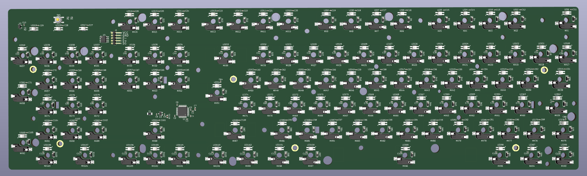
I think the only main thing you need to worry about regarding the placement of components is that it's highly recommended to place capacitors as close as possible to the pin it's supposed to be protecting. Having them far away makes them less effective. Likewise, the ESD protection should be right next to the connector.
Once you're happy with positioning everything, run the Design Rules Checker (DRC) to check if there aren't any horrible problems so far (besides the unconnected items), like overlapping components. If that passes, then I would recommend looking for the DRC rules for whichever fabrication house you intend on making the PCB at. The two most popular ones are PCBWay and JLCPCB, and either one will do the job. My work colleagues use JLC for their stuff so that's what I will use as well, but my N64 colleagues use PCBWay. JLC has an article regarding their design rules, and there is this project on GitHub which translates them into DRC rules for KiCAD.
If the only errors you have left on the DRC are unconnected items, let's go over some recommendations for the wiring stage.
There are a lot of dos and don'ts when it comes to wiring PCBs, some exist for historical reasons but aren't as relevant today, while others are subject to incredibly fierce and exciting (read: boring) debates between engineers. Probably the big one that gets people fuming is that we can't have 90 degree bends in traces because they introduce electromagnetic interference, so we should only use 45 degree bends. Whether or not this holds true for high frequency devices or high voltage PCBs does not really matter to us because a keyboard is neither. You can go fully curved if a vintage look is your preferred aesthetic!
The other big one is to minimize is forks:
The reason for this one is that the sharp bends create pockets that will cause the acid that's used during the etching of the copper to get trapped, which risks damaging the traces. Supposedly, modern PCB manufacturing has largely eliminated this issue, but the recommendation remains.
If you recall from our keyboard matrix, we have lanes which cross over each other, but we don't want them to electrically connect. That is why we have 2 layers of copper, it lets us cross over tracks:
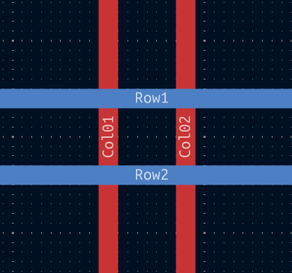
In the scenario you do want the two layers to connect, you can use a "via", which is a hole that drills into the other layer (if you remember the PCB sandwich diagram from earlier, it was what was connecting the two layers together). You can use vias to help cross over existing traces:
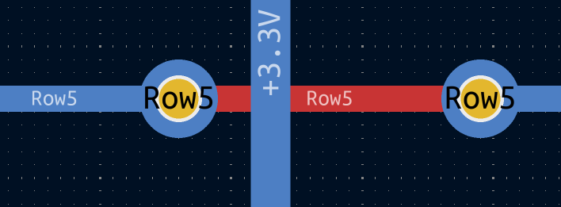
You can also place vias on pads, but this is generally not recommended because it can introduce manufacturing defects.The smartest thing you can do is keep one layer with only horizontal traces, and another with only vertical traces. This will help minimize how many vias you need to place and also much space your traces occupy, because bends will take up real estate for both horizontal and vertical traces.
KiCAD, by default, uses traces that are 2mm in size, and these are good enough for most things, but it is generally recommended to make traces that carry digital data + traces that carry power thicker. For power traces, the recommendation is because smaller traces will heat up more due to the constant current being pushed through them, while data traces are recommended to be thicker to improve signal integrity. There are math formulas and calculators built into KiCAD to help figure out the ideal trace widths, but I am not enough of an electrical engineer to be able to use them, I just went with the recommendations from other people. I chose 6mm for the USB data traces, 4mm for LED data + power traces, and everything else used the default width.
The track you are probably going to be placing the most will be the ground, which will quickly occupy a lot of your track real-estate. Because of this, a common thing to do is to make a ground plane. The idea is that the entire copper layer becomes ground, and your traces and vias will be carved out of the ground. This picture demonstrates it better than I can explain:
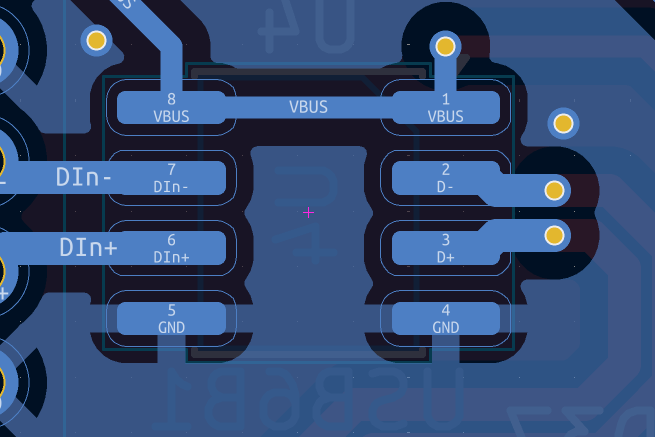
The ground is the entire blue plane. Notice how the ground pads on the IC are automatically connected to the plane.Having a ground plane on both the top and bottom copper layers is a good idea and a great time saver. I originally started wiring everything without making a ground plane first, which created a few headaches. The only annoying thing about the ground plane is that KiCAD will not update it every time you place something down, you need to manually regenerate the planes. Sometimes you will create an island that is electrically isolated from everything else, which is why having the ground plane on both layers is convenient, because you can connect the island to the rest of the ground plane using vias:
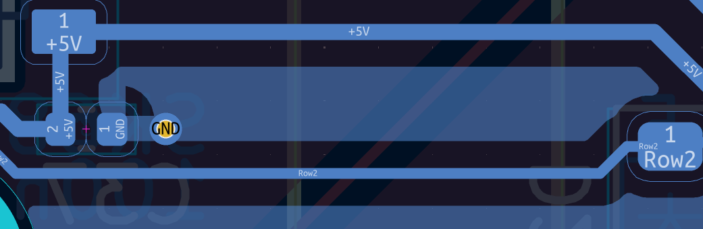
The LED capacitor's ground plane is electrically isolated from the primary plane, so I placed a via to connect it to the plane in the other layer.Sometimes KiCAD will not be able to make the ground plane automatically reach pins that have a lot going on around them, but you can usually just wire a track from the pin to the plane:
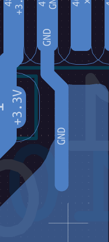
Complicated PCBs with more than 2 layers will usually have an entire plane be a ground plane without any traces on it, another plane which will just be 3.3V, etc... and then electrically connect to them with vias.
If you remember from your highschool physics, current running through a wire generates magnetic fields around it, which in turn messes with the electrons in adjacent wires. If you don't remember this detail, you can re-traumatise yourself with this video. Either way, because of this physical phenomenon, it's a good idea to keep wires some distance from one another. It also means that wires (especially power wires that tend to have a lot of constant activity) should not run parallel to wires in the other layer. Try to minimize crossing wires, but of course it's not a huge deal if you must.
Everything else is, down to your aesthetic preferences. You can route stuff under ICs, and connect to pads perpendicularly, but doing this gives me severe botherations, so I avoid it as much as possible.
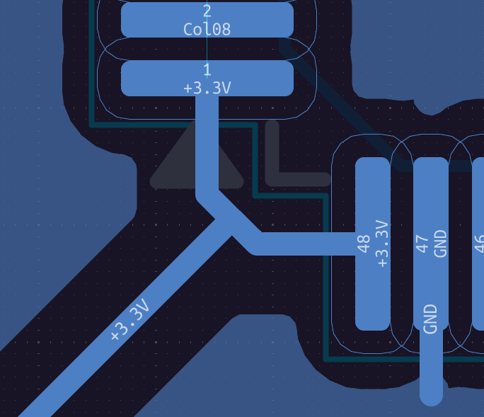
This works, but it does not spark joy.When it comes to connecting tracks to pads, all you really need to do is to touch them. This would be completely valid wiring but will probably result in you getting bullied by nerds:
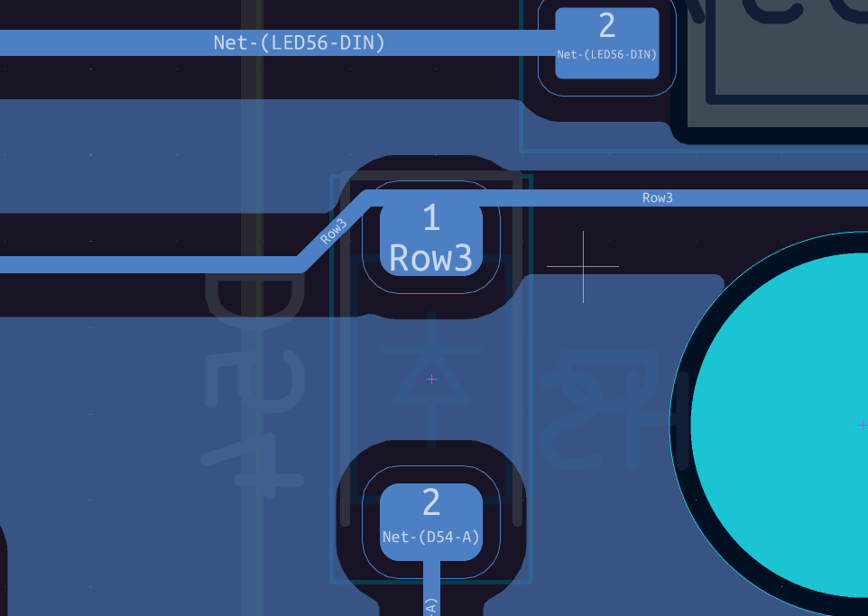
And lastly, but most importantly, the golden rule is to keep your tracks as short as possible. If you don't know why you need to do that, go back and re-read this entire section until you do.
Many of the rules that were outlined here are not set in stone, you can break them if you are having trouble wiring things as-is. But avoiding them as best as possible is generally advised.
The very first thing you should wire in your PCB should be your USB data lines, since without them properly functioning, nothing in the keyboard will work. The USB data lines are also the only thing that needs to be wired differently from everything else in our design, because they are a differential pair. KiCAD has an option for wiring a differential pair, letting you do both tracks at the same time:
The important thing about a differential pair is that both traces need to have the same length or the data will not arrive in sync. For USB 2.0, the maximum deviation you can get away with is a difference in length of 3.81mm between both tracks. When you need to have your tracks turn, it's common for one to get longer than the other, but luckily KiCAD lets you add some curves to make the shorter track longer:
Now the left track matches the size of the right one.
In my case, because the USB connector has the data lines swapped from the inputs on the STM32, and because I can't rotate the connector, and because I wanted to avoid routing the data lines under the ESD chip for signal integrity reasons, I had to do something gnarly:
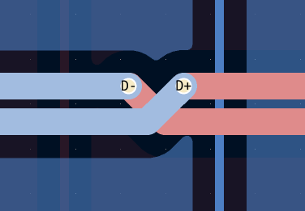
USB is relatively robust so doing this isn't going to be a horrible problem, but it should be avoided in your design if possible.
An interesting recommendation that I was given is to place a bunch of vias that connect to the ground plane along the path of the USB differential pair. The reason for doing this is to give the ground on the connector a guaranteed shorter path, because otherwise there's no way to know how long the return path is gonna be and how far it'll divert away from the USB differential pair traces.
Outside of the USB data differential pair, everything else can be routed pretty straightforwardly. There's a lot of different ways of routing the keyboard, I would recommend looking at a bunch of different open source keyboard designs and seeing what other people do. I went through 4 or 5 iterations of my routing before I settled on my current wiring.
I had originally routed my rows and column tracks exactly how I had it in the schematic (IE always starting where the flags were positoned), and this resulted in tons of long tracks that surrounded the entire PCB:
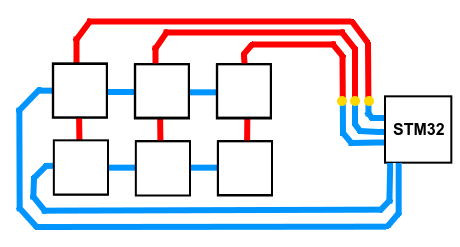
During my many rewiring attempts, I did this instead which is perfectly valid.
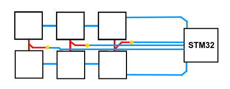
Remember, you can change which pins in the STM32 the rows and columns are connected to, so swap things around to make your wiring tighter!
The other big thing that went through iterations on my design was the LED wiring. I originally had the 5V line of all the LEDs connected together:
I did not draw the capacitors on this wiring diagram, but just know they are all right next to the 5V pin on each LED.
But then I decided to have the odd and even rows connected separately from one another to reduce how far the power would need to travel just to reach the last LED in the chain:
Notice how this also keeps vertical and horizontal traces in separate layers!
Though if I were gonna do one more rewiring to the keyboard, I would probably wire it like this:
Wiring everything else was relatively straight forward.
After many days of channeling my inner George Lucas, I settled on the final wiring:
And here's the final positions of all the labels on the STM32:
When you're happy with your wiring, run the DRC and fix any potential overlapping wires, missed connections, isolated ground planes, ground connections without at least 2 paths, and other mistakes.
I added my face as well as a piece of text marking the revision to the silkscreen, and I was ready to send the PCB off to fabrication!
Once you are ready to unleash your creation upon the world, export gerber files of your PCB by going to File->Fabrication outputs. Since we are going to use JLCPCB, you'll need to configure the output to match their requirements. If you use the Fabrication Toolkit plugin, you can use it instead which will generate the gerbers (in a convenient zip package) as well as all the other files you're going to need. Either way, once you've exported something, head on over to your fabricator of choice. Most places will require you to place a minimum order of PCBs (because making them is costly). JLCPCB and PCBWay both have a minimum order quantity of 5. You can choose to keep only 1 of them but if you're paying for 5, you might as well get 5. You can share the extras with your friends! :D
The default values in JLCPCB are perfectly fine for a keyboard, because keyboards are very undemanding. The only changes I made was to switch the PCB color to black so that it would match the board I'm cloning, and the surface finish from HASL to lead free HASL because I don't want to be responsible for making people more stupid than they already are.
JLCPCB also supports assembling your keyboards. While I originally planned on hand soldering myself, I thought "since this is my first PCB ever, I want to make sure that any problems on it are not because of mistakes in my soldering". JLCPCB's soldering is not perfect, I have heard complaints about it before like I have with PCBWay too. Manufacturing isn't perfect which is why you can also pay extra to have your assembly tested before shipping. Personally I don't mind spending a bit of my time inspecting the board and probing it with a multimeter, so I decided to forgo the cost + having to implement tests for them to run. I chose to have two boards assembled (the minimum amount), the rest I can hand solder if I end up doing anything with them besides collecting dust. Conveniently, since my board only has components on the back side, I didn't have to pay as much for the assembly.
If you don't want to pay for the assembly, you can buy all the parts you need from JLC as well.
In order for JLCPCB to know what components your board is using for the assembly, you need to provide them with a Bill of Materials (BOM) as well as positions for all the components. If you used the Fabrication Toolkit, you should have those exported, if not you can follow this article from JLCPCB to set up the export to their specifications. Once JLC finishes processing, it will present you with a table of what components it managed to find:
Unfortunately for us, not everything was correctly found, so let's go over each one and try to solve it:
An interesting note, the fuse that was selected was the BSMD1206-050-33V, which is a resettable fuse. Usually a fuse will suicide to save the rest of the circuit, but a resettable fuse will increase its resistance to lower the current, which means it can be used multiple times. They do degrade every time they do this, however, so it's still ideal to not push them.
JLC failed to find these components because the names that KiCAD exported did not match anything on their database close enough. Finding the correct components might require a bit of detective work and careful browsing of their parts store:
Once the BOM is error free, double, triple, and quadrinipple check the selected parts and especially their spec sheets. For instance, SK6812MINI-E has a few variants which have the pins in a different order, so make sure they match your design.
Afterwards, JLC will give you an interactive 3D view of the keyboard so that you can check the part placements are correct. If they're not, you should probably fix them:
Those switches need rotation and repositioning.It was also very tempting to send the PCB off to fabrication with the connector rotated like that because I wanted to see how they would accomplish it.
ICs will usually have a little punched hole marking on one of the corners, and this punch will usually also correspond with a small arrow indicator in the silkscreen. Components that are polarized or that have a specific direction (for instance, diodes) will also usually have a line, a graphic, or even a specific shape on them to indicate their ground pin. Electrolytic capacitors usually are polarized and will explode epicly if wired backwards, however the ones used on SMD are ceramic capacitors, thus are not polarized. Again, do not rush through this step unless wasting money is something you enjoy doing!
After a bit of tweaking, everything looked good but the voltage regulator for some reason had a missing model:
Not much I could do about that, so I moved on to the next step, which was payment and shipping. In total I paid close to 200€. It was 27€ for the 5 boards, 86€ for the assembly of the 2 boards, and the rest was shipping + taxes. Yeah, that last part really stung...
A few hours after you place your order, JLC provides a "DFM Analysis" that lets you check for any problems during the positioning, and when I went to investigate, there was a problem that needed my attention. The voltage regulator was left unassembled, so I contacted support and they showed me an image of the voltage regulator's placement on the PCB: it was too small and did not fit the pads. It turns out that when JLCPCB automatically selected the part, it selected one with a size of SOT-353, but the component size I'm using is SOT-23. I did not catch this mistake because the 3D model was missing, and the spec sheet showed me all the different sizes the package was available at. The size was explicitly stated in the part info in the BOM table but I glanced over it, whoops.
Fortunately, their online chat support allowed me to go back and set the component to the correct one (74AHCT1G125GV) at the cost of forgoing 2 extra cents that I paid (since the correct part was cheaper), and the error disappeared a few hours laters after being looked at by an engineer. Funnily enough, as I was talking to support I received an email warning me about the unconnected part, so I was a bit faster than their automated system.
After this, production on the board wrapped up a week later, and then shipping took another week. The boards arrived in a big box with a lot of anti-static bubble wrapping:
I was surprised how clear the logo looked, I was afraid that the tiny details would've gotten lost:
Before trying anything, I did a quick scan of the two assembled boards to make sure everything was soldered + oriented correctly, and it was pretty spot-on sans this mistake with Diode 92:
Fixing this was thankfully relatively easy with the soldering iron.
I didn't truly appreciate how small some of these components were until I saw them on my board. Hand soldering these capacitors and resistors would be quite a challenge, but not impossible. It will be significantly easier if you have a hot air station, but I would not use it to solder the hotswap switches since they are plastic.
Now, to fully test if everything is working, we would need to have the firmware set up, but for the time being we can do a very quick sanity test by holding the boot button down while plugging in the board to a PC. I am on Linux, so I did that, and then I opened the terminal and wrote lsusb, which listed a device named STMicroelectronics STM Device in DFU Mode. This told me that there was nothing obviously wrong with my board, hooray!
Except my dear reader, I am actually a big fat liar. You see, as I was writing this article (while I waited for the boards to arrive) I made a horrible realization that in my many attempts of rewiring the board, I swapped the USB D+ and D- labels on the STM32 without thinking of the consequences. My revision 1 boards all came with this mistake (the drawings in the article have it correct), and now I was presented with two choices: cut the traces on the board with an x-acto knife and solder some bodge wires to swap them around, or swap the wires on the USB cable itself.
I went with option 2 since the USB cable is specifically for the keyboard, given that it uses a female header connector. The cable conveniently came with the 5 wires correctly colored (red for vcc, green for D+, white for D-, and black for the two ground cables), and I confirmed that was the case by probing with a multimeter in continuity mode. Swapping the cables is relatively easy, the connector has a small plastic tab on each of the wires, lifting the tab releases the tension and allows you to pull out the wire:
Image sourced from here
I did this with the two data wires on my cable before the boards arrived, which was why the lsusb test worked. And everyone will be none the wiser :)
Last thing to take care of is QMK, and this is actually surprisingly easy. If you have a relatively straightforward keyboard, you can use the online QMK Configurator to make your firmware with zero programming knowledge required. I, on the other hand, like to code so I chose to write the firmware. If you're on Windows or Mac, you can use the QMK Toolbox to flash and debug the keyboard. I am on Linux so I had to install it manually. For some reason, despite being 2026, QMK apparently has not heard of the XDG Base Directory specification so it tries to install itself to your home directory by default.
To create a new keyboard firmware, you type qmk new-keyboard. It will ask you for the name of your keyboard (buukeeb in my case), your GitHub username + real name (for attribution), and then the base layout to use. Since mine is a 100% ISO, I chose fullsize_iso. Afterwards it asks if you are using a development board (I'm not), and finally the microprocessor model (STM32F072). This will create a base firmware for your board inside the qmk_firmware/keyboards folder, with the idea here being that you can then PR your keyboard into the QMK repository so everyone else has access to it. Having to navigate there is a bit inconvenient so I cut+paste my keyboard firmware folder somewhere more convenient and then created a symbolic link there.
Most of QMK's configuration comes from editing two files: keyboard.json and keymap.c. We'll start with the JSON file, which defines all the settings for our keyboard. In the matrix_pins, I put the pins in order using the name that was on the KiCAD schematic. Column 1 is attached to PB11 so I put "B11", coumn 2 is "B10" right after, etc... Do this for rows and columns. You might have noticed "diode_direction": which is "COL2ROW" by default, which is correct since I put the diodes on the column pointing to the row.
Now, the important part is to fill in the layout. The structure of each key is like this:
{"matrix": [row, col], "x": xu, "y": yu, "w":wu, "h":hu},
row is the row number of the key, and col is the column number. Both numbers start at zero. For instance, my Esc key is [0,0] since it corresponds to row 1 and column 1 on the keyboard. F1 is [0,2] which corresponds to row 1 and column 3, etc...xu and yu is the position of the top left of the key on the keyboard based on its unit size. A unit (u for short) is the measurement used to define the physical size of a key, with a standard key size (like your letter keys) being equivalent to 1u. Your backspace key is as long as 2 single keys, so it has a size of 2u. This diagram from Keychron demonstrates it visually. The xu and yu is the coordinate of the key if you think of the keyboard as a grid of u's starting at [0,0] on the top left. The ESC key is at [0,0], however on my keyboard there is a gap between F1 and ESC that is as big as a single key, so F1 is at [2,0]. The key just below ESC on my layout has a gap of half a key, so it's position is [0,1.5] . This can be a bit confusing, so I hope this diagram helps. If you used the Keyboard Layout Editor to make your layout, the coordinates used there are equivalent to these ones.wu and hu are the unit sizes of the key. If you don't put w or h, it will assume 1u width and height. Again, if you used the Keyboard Layout Editor, the sizes used there are equivalent to these.The order of the keys on the layout section doesn't matter, but it would be best for you to keep it in sinistrodextral order (start from left to right, and when you reach the end of the row you move to the row below). The default key layout for a 100% ISO keyboard uses way more columns and rows than I did. Honestly, I feel like there should be a tool to autogenerate this layout data for me, but I searched around and found nothing...
Once every key has been assigned its data, the next thing we need is the keymap, which tells the firmware what key gets sent to the computer when you press that switch. The list of keys will need to be in the same order as you defined your layout, so if you used sinistrodextral order then you shouldn't need to change keys around. The default generated layout matched my layout exactly, so I didn't need to change anything. If you need to, you can find the list of keycodes here.
Now that my JSON and keymap was fully defined, it was time to flash it onto the board. I typed qmk compile -kb buukeeb -km default in the terminal to compile the keyboard, and I got an error. Apparently, QMK wants you to include a URL inside the keyboard.json or it will refuse to compile. So I had to add "url": followed by my project's GitHub link to the JSON, but if you don't have one yet you can just leave the URL itself blank. After adding this, the firmware compiled successfully. To flash it, I keep the boot button on my board pressed while plugging in the USB, and then I run qmk flash -kb buukeeb -km default, and after about 3 seconds, the keyboard has its firmware updated. I Googled a completely random keyboard tester site, and made sure that all the keys were working. Not all keys will be properly detected by the website so you might need to test them outside as well.
If for some reason one of your rows is misaligned (for instance, pressing the S key inputs an A), that means you missed a key in your keymap or in your layout. Try to find what key you can correctly press before the misalignment occurs, the issue will be in that area.
The next thing I wanted was to add Media Keys. Usually keyboards will have an FN key to switch between F key overrides, but I don't have an FN key on my board design. Instead, I wanted to treat AltGR as a hidden FN key, since the key doesn't get a lot of use outside of placing the euro symbol or brackets on the Portuguese layout. There are a few ways to go about doing this, the more popular option is to use layers, which allows you to have multiple defined keymaps and switch between them as needed. I opted to use key overrides instead, because I only wanted a few keys changed and because they support more complex behaviour.
Adding a key override is just a matter of defining a struct like so:
const key_override_t myoverride_altgr_f1 = {
.trigger_mods = MOD_BIT(KC_RALT),
.layers = ~0,
.suppressed_mods = MOD_BIT(KC_RALT),
.trigger = KC_F1,
.replacement = KC_BRID,
};
Where:
trigger_mods is the modifier key combination I want to trigger the override. Usually the modifiers are the ones listed in this table, but since there wasn't a mask specifically for AltGR I had to use MOD_BIT to create the masklayers is a bit mask of the layer you want to be affected. I only have one layer, but if I decide to have more I want all of them to be affected, so I bitwise NOT'ed 0 to create a mask that occupies all the bits (I couldn't find a definitive size for layers so I opted for this instead of 0xFFFF...).suppressed_mods is the keys you want to suppress when the modifier is pressed. For instance, if you decide to make CTRL+S a secret combo to type the Z key instead, if you don't suppress it the keyboard will send the Z key as well as CTRL, which will trigger an undo on most programs. I want to suppress the AltGR key from being sent if I press my override so I add the mask to it as well.trigger is the key you want to trigger the override.replacement is the key you want the keyboard to send instead. In my case, I want AltGR+F1 to send a "brightness down" key. The keycode of the key is the same as the list of keycodes used in the layout.And then you have to create a file named rules.mk with:
KEY_OVERRIDE_ENABLE = yes
And the key overrides should function.
Sometimes you will want some more complex logic in your override, or some key codes simply do not work properly with the override system. In these situations, you can set replacement to KC_NO, and then add .custom_action to the override structure and have it point to a C function you want to execute. For instance, I had to do this for the RM_VALD key which is a key that's supposed to lower the RGB lighting (I'll get to lighting in a sec). I had custom action point to a function I called keylayer_rgb_val_down and then wrote this C function:
static bool keylayer_rgb_val_down(bool activated, void *context)
{
if (activated)
rgb_matrix_decrease_val();
return false;
}
Once all key overrides structures are written, you need to place them in a global array called key_overrides, like so:
const key_override_t *key_overrides[] = {
&myoverride_altgr_f1,
&myoverride_altgr_f2,
&myoverride_altgr_f3,
...
};
Once all the keys were working as I expected them to, it was time to tackle the per-key LEDs.
Adding LED support for the keys is easy (in theory), you add "rgb_matrix": true, to the features section in your keyboard.json, and then you add an RGB matrix definition like this:
"rgb_matrix": {
"driver": "ws2812",
"max_brightness": 50,
"layout": [
{ "x": 210, "y": 5, "flags": 8 },
{ "x": 200, "y": 5, "flags": 8 },
{ "x": 190, "y": 5, "flags": 8 },
{ "matrix": [0, 16], "x": 173, "y": 0, "flags": 4 },
{ "matrix": [0, 15], "x": 163, "y": 0, "flags": 4 },
{ "matrix": [0, 14], "x": 153, "y": 0, "flags": 4 },
...
]
}
"ws2812": {
"pin": "A3"
},
"flags" is 4 for key LEDs, and 8 for status indicator LEDs."matrix" value so that QMK knows what key on your layout that LED maps to.max_brightness is the maximum brightness you want the LEDs to be able to reach, from 0 to 255. I used 50 as my initial value because I didn't want to risk popping the fuse."pin" was set to "A3" because that's the LED_DATA pin in my STM32.Pretty simple right? I did all of that, and when I flashed my board all my keys were super bright, and they were white but quickly faded into red and remained there. "That's a weird default" I said to myself, but I didn't think much more of it, until I tried pressing keys and the keyboard would not respond. This meant that the LEDs were pulling too much current and so the STM32 was not being properly powered, so I removed all the LEDs except the status LEDs while I tried to diagnose why they were pulling so much juice. With only the 3 LEDs active, the LEDs would start red (which was the supposed default for QMK, not white) and keyboard would function normally. I tried changing the brightness value to something lower, but the keys remained at the same brightness, even when is set it to zero. Strange... Apparently LED brightness is stored in the keyboard's EEPROM (I'll get to explaining the EEPROM in a sec), so I tried clearing the EEPROM by assigning the EE_CLR key to my ESC key, and that didn't seem to do anything. Bizarre... When I tried to set colors on my LEDs via code in the keymap.c, the LEDs remained red. Very suspicious... I spent an entire afternoon trying to solve this, but no luck.
Defeated, I decided the next step would be to ask in the QMK Discord server (a last resort for me because I hate joining Discord servers, but that's a rant for another day...). After explaining my issue, someone brought up that the LED driver defaults to bitbang mode for the WS2812 driver. This normally isn't an issue, however the code compiled by GCC 15 for the STMF072 is slightly different from previous GCC versions, which mess with the timings of the LED data. Switching to the driver to PWM mode by adding "driver": "pwm", to the "ws2812": section of the JSON, creating a config.h file with:
#define WS2812_PWM_DRIVER PWMD15
#define WS2812_PWM_CHANNEL 2
#define WS2812_PWM_PAL_MODE 0
#define WS2812_PWM_DMA_STREAM STM32_DMA1_STREAM5
#define WS2812_PWM_DMA_CHANNEL 5
Creating halconf.h with:
#pragma once
#define HAL_USE_PWM TRUE
#include_next <halconf.h>
And creating mcuconf.h with:
#pragma once
#include_next <mcuconf.h>
#undef STM32_PWM_USE_TIM15
#define STM32_PWM_USE_TIM15 TRUE
#define STM32_TIM15_SUPPRESS_ISR
Fixed the issue. I could finally manipulate the LED colors after clearing the EEPROM:
I never would've gotten there on my own. The alternative solution was to switch to GCC 14 but this is a pain to do in Ubuntu thanks to how amazing apt is.
I added all the other LEDs back to the JSON, and now the LEDs were finally respecting the max_brightness value I set, meaning I could use the keyboard while having all the lights on. A normal fuse would've popped when the LEDs were at max brightness, but since I have a resettable fuse it instead increased its resistance, explains why the LEDs faded to red and why the keyboard stopped working. However, the voltage limiting could have been on the USB driver in the PC instead of the fuse! I'd have to do some better measurements to give a definitive answer, but I think you can understand my hesitancy in wanting to sacrifice some fuses and potentially USB ports to find out :)
I wanted my keyboard to default to a blue hue (to match my PC case), so I added this to rgb_matrix section of the JSON file:
"animations": {
"solid_color": true,
},
"default": {
"on": true,
"animation": "solid_color",
"hue": 148,
"sat": 255
},
which worked after clearing the EEPROM. I had placed my board partially in its case to see how it looked, and to my surprise I actually managed to place my logo in a great spot without intending to:
My logo's eyes and the keyboard name + revision is visible through the space bar area. That was not on purpose but I wish it had been!
For the max brightness, I played around with some values but 100 seemed to be pretty good, and measured about 77mA on my fuse with all the LEDs turned on in pure white. White is the most intense color for an LED since it requires Red, Green, and Blue to make.
I mentioned EEPROM a few times, what is it? In short, EEPROM stands for Electrically Erasable Programmable Read-Only Memory, and it is essentially a type of memory that keeps its values after being shut off. Game cartridges, for instance, store the game saves in an EEPROM chip. The STM32F072 does not have EEPROM, but it does have flash memory (64KiB for my specific device to be exact), and this is where the firmware gets flashed to). QMK treats the part of the flash memory that is not occupied by the firmware code as a sort of EEPROM, and it does this magically for you, so you can use the EEPROM functions despite not having an EEPROM chip. One of the function key modifiers I added was a key combo for lowering and raising the brightness of the LED backlighting, and much to my surprise when I unplugged and replugged my keyboard to the PC it remembered my brightness settings. which meant that it was saving this data to "EEPROM".
That did bring up another concern, however. Flash memory can only be rewritten so many times before it degrades, so if I constantly change the keyboard brighness I could kill the memory since it would be saving every change I make. Fortunately, the people who developed QMK also thought about this, so the EEPROM code for the RGB brightness settings uses a timer that only allows for the EEPROM to be saved once the user stops making modifications after a few seconds. Really neat to have all of this functionality built-in, I thought I'd have to do it myself!
One functionality I do have to add myself, however, is making the status indicator lights actually indicate what they're supposed to. This was quite easy to add in-however
static void set_led(uint32_t index, hsv_t hsv)
{
hsv.v = RGB_MATRIX_MAXIMUM_BRIGHTNESS; // I want the LEDs to always be at max brightness regardless of the brightness setting of the keyboard backlights
rgb_t rgb = hsv_to_rgb(hsv);
rgb_matrix_set_color(index, rgb.r, rgb.g, rgb.b);
}
bool rgb_matrix_indicators_user(void)
{
hsv_t hsv = rgb_matrix_get_hsv();
// Scroll Lock (LED 0 in the chain)
if (host_keyboard_led_state().scroll_lock)
set_led(0, hsv);
else
rgb_matrix_set_color(0, 0, 0, 0);
// Caps Lock (LED 1 in the chain)
if (host_keyboard_led_state().caps_lock)
set_led(1, hsv);
else
rgb_matrix_set_color(1, 0, 0, 0);
// Num Lock (LED 2 in the chain)
if (host_keyboard_led_state().num_lock)
set_led(2, hsv);
else
rgb_matrix_set_color(2, 0, 0, 0);
// Return true to continue running the keyboard-level callback
return true;
}
Last thing I wanted to add support for was OpenRGB, which would allow me to add custom effects and patterns to the lights, manipulate the LEDs individually, etc... I don't intend on using these features but they're a nice to have. Luckily, this was really easy to do. All I had to do was to clone OpenRGB's QMK Community Module into the qmk_firmware/modules folder, rename the folder to openrgb, and then in my keyboard.json file I just add "modules": ["openrgb"],. After reflashing and adding my keyboard to OpenRGB's "Manually Added Devices" section (using the Name, USB VID, and USB PID values defined in the keyboard.json`), I could turn my keyboard gay:
A keyboard that supports LGBT+ rights.
That was surprisingly easy to do, I was expecting much more of a fight...
So, to wrap up this behemoth of a blog post, should you make your own custom keyboard PCB?
Here are good reasons to do so:
The reasons why you shouldn't:
How much you weigh these pros and cons depends on you. For me, the learning experience far outweighed the cons. Honestly, it's kinda bewildering that you can, as a hobbyst, make affordable printed circuit boards in your spare time for fun. A few years ago I couldn't even dream of such a possibility.
Regarding my keyboard, there are some things that need tweaking:
max_brightness setting. I want to add a limiter for this in the firmware, although give users the choice to disable it if they want to "overclock" the LEDs but risk killing the fuse or something else.I think the one thing about this project that I am a bit saddened about is how reliant it is on China, because I always like sourcing my things locally as doing so is better for the environment + economy. PCBWay/JLCPCB are both located in China, the European alternatives are twice as expensive for small hobbyist batches, and one of them even multiplied the price by 4 just because I wanted a black PCB. Many electronic components are more expensive if sourced here, and if we're frank they are probably made in China as well. I don't think there's an easy way to escape this unfortunately. But in the unlikely event I decide to make boards to sell, I'll look into trying to get them made here.
This is in no way a dig at the quality of the boards or of the service. JLC did fantastic work, and their support team were super friendly and receptive to feedback from me.
If you are interested in checking out the source code and files for this project, everything is available on GitHub as usual.
Now, I need to go down another rabbit hole to find keycaps for my keyboard... I found these on Etsy which look sooo cool but obviously are not made for a Portuguese layout. Oh man, what have I gotten myself into...
{kind=link}
{kind=link}